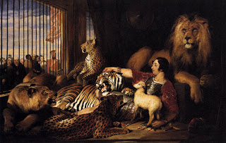

Chullin 5 - An Idol-Worshiping Jew Cannot Do Shechitah
Previously was learned the opinion of Rav Anan that an idol-worshiping Jew can do kosher slaughter of animals. Here is a challenge to it.
The Torah said, " When a man among you brings an offering to God: from the animals ..." The words "among you" tell us that some people are excluded from bringing voluntary offerings to God, namely, completely non-observant Jews. Further, "among you" means that only to Jews can the term "non-observant" apply, but all non-Jews can bring offerings. The words "from the animals" are extra and teach another law: people who are similar to animals in that they do not recognize their Creator are included and are still allowed to bring sacrifices, in the hope that they will improve their behavior.
Then who is considered non-observant? Those who deny the complete Torah, that is, those who pour libations to idols and those who violate Shabbat in public. With this, Rav Anan's proof is refuted, and only people who observe Shabbat but violate some commandments, such as eating non-kosher meat, are allowed to do shechitah.
Art: Sir Edwin Henry Landseer - Isaac van Amburgh and his Animals